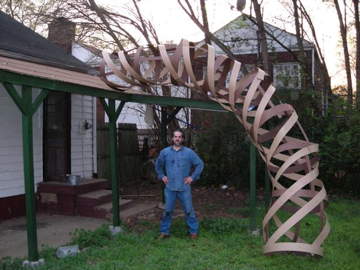
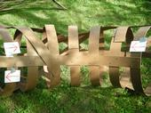
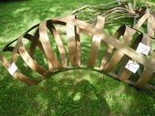
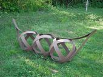
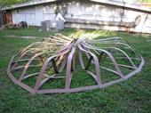
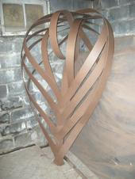
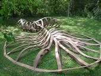

This is the blurb that will go into the calendar of events pamphlet that gets passed out to everyone at the gate. I hope it is artsy-fartsy enough…
|  |
|
Comprised of 100 feet of writhing helices and twisting geometric forms, Jack's Beanstalk reveals the algorithmic skeleton beneath Nature's skin. This work is an exploration into the creation of organic forms from essentially non-organic starting materials, and in the development of building processes inspired by Nature. Nature uses elegant building processes to assemble simple chemical sub-units into structures necessary for life. These robust processes respond to often chaotic environmental inputs to build organisms of striking complexity and individuality.
Inspired by Nature's methods, the artists creating Jack's Beanstalk focused on the design of processes for assembling simple subunits into complex structures. These 'growth' processes mimic nature in their ability respond to chaotic inputs during growth -- to include the vagaries of the terrain in which the sculpture is "grown" and the aesthetic caprice of the builders in the moment.
|
 |
For lack of a better name, I'm calling it Jack's Beanstalk. Visually, it has 3 components: stalk, leaves and beanpods, and it will resemble a crawling bean vine or perhaps it will look like Jack's Giant Beanstalk—AFTER it has been cut down-- I'm not going to try to build a stalk that is 70 feet tall in the playa wind. At least not this year (wink). Stalk, leaves and pods are all made from the same material, and in the same dimensions: 4-inch-wide, 8-foot-long, 3/16-inch-thick slats of a composite product called tempered hardboard. The tempered hardboard will be painted green, probably fluorescent green, and lit with UV lights. (There is still some debate about whether the extra cost of fluorescent paint is worth it…. Regular paint and colored lights may be "cool enough".)
Design:
720 slats will be used total.
The stalk will be comprised of 90-degree elbows that are similar in shape to a single macaroni noodle, but a noodle that is 8 feet long (measured on the long edge) and 2 ? feet in diameter. Each stalk segment will be comprised of between 11 and 15 slats, depending on how much bracing that particular segment needs (segments supporting stems to leaves and beanpods may need more strength). The tubular segments are made from slats turned into hoops that are 2 ? feet in diameter, lined up at intervals and screwed to a pair of slats lying parallel to the curve of the segment and to a pair of slats that coil about the segment. It is a strong and simply constructed shape.
Beanpods will be comprised of 13 slats. 3 slats will be turned into hoops and put together to make spheres that are 2 ? feet in diameter (just like the stalk). These spheres are the beans. 4 slats will 'house' the beans, and be put together in a way that forms the outline of a pod. The whole pod will be about 11 feet long.
The leaves are by far the most structurally demanding component, and are made from 19 slats. The leaves received by far the most head- and butt-scratching (also known as 'design time'). Construction of a leaf is hard to describe in words, but simple to do in practice. The design of the leaves allows for diversity in construction. Leaves can be made that are fully open and quite flat, that are quite closed up, that are concave, that are convex. Making a leaf that is fully open and convex requires no more time or effort than one that is fully closed and concave. Depending on the parameters chosen for a given leaf, they will be between 6 and 8 feet long, and between 2 and 4 feet wide.
Should any slat break, or any two slats, no matter which two, it will not compromise the structural integrity of the whole. Repairs are a snap. If a slat breaks, another slat is simply placed over and screwed to the old slat (I'm bringing 72 slats to have as a repair reserve).
Dividing out the number of slats needed per pod, stalk segment and leaf, there will be about 7 stalk segments, 15 leaves, and 15 pods. The numbers of components can change, but the number of slats is fixed….. 720 is the max I can afford.
Given the above numbers, the whole will be about 70 feet long (linearly).
How am I going to get so huge a thing to the playa? It will fit in a box that is 8 feet long, 2 feet tall and 2 feet wide. I'm transporting the slats, not the sculpture, and building the whole thing on site.
Construction:
At every single step of the design process I have kept at the forefront of my thinking the actual, on-the-playa building process. I've done dozens of experiments and built jigs (brackets) that will make the construction process easy, reproducible, and mass-producible—by drunk people. I have built a 16 foot-long section of stalk in under 30 minutes. I've built a leaf in under 45 minutes (leaves will be far, far faster with 2 people—my arms just aren't 6 feet long), beanpods are trivial—10 minutes, easy. To give an idea of the kind of thinking I was doing, there will be no cuts made in the material. I may not even bring a saw. Every part of every component is made from a slat that is 8 feet long. This does 2 things: first, it confers a visual symmetry to the whole, and second, it simplifies/ speeds construction, since measuring and cutting are never needed.
Every plan has an Achilles Heel. This plan does too. Wind. If winds are too stong, building has to be delayed. Pods and stalk segments can be built in moderately high playa wind, but leaves require lower wind to build. Joining stalk segments together, and attaching leaves requires lower wind. Once in place, however, it will be staked, guy-wired and weather-proofed. It is much like a tent. My tents have always survived whiteouts, but putting one up during a whiteout would be a nightmare…..
My current plan is to arrive on the playa on Wednesday before the event starts to begin construction, just in case there are serious weather delays. Julie has offered to come and help with the early phases of construction.
As far as physical construction is concerned, I have everything planned and tested. The pressing issues right now are paint and lights.
Lighting:
My knee-jerk-reflex is to paint the whole damned thing fluorescent green and light it with UV lights. Highlights of other colors are also part of my reflex, but will be dependent on how the base coat of green goes.
The issue with this plan is cost. Fluorescent paint that glows when lit with UV light is $81/gallon for the cheapest stuff I can find. And I was lucky to find it at that price. Most places on the web want $90-145/gal. I'll need between 10 and 12 gallons depending on how far I can stretch the coverage (and I've built a "roller-brush combo tool" to maximize coverage on the rough, backside of the hardboard). The most efficient UV light bulbs (lumens/dollar, taking cost of fixtures into account) I've found are $40/100watt bulb. An installation of this size will need an absolute minimum of 6 such bulbs, and using so few is courting a dim-saster (so dim you can't see it). 12 such bulbs is how many I'd need to be at the 95% confidence interval of "enough". These numbers are based on experiments done in my basement, where I painted a board with fluorescent paint, and drew a bulb farther and farther away from the board, till the amount of light was low enough that my roomie, Aaron (to whom lots of credit goes for ideas and brainstorming on this project), and I both agreed it was too dim. From this number, we calculated a guesstimated radius of "bright-enough-ness", calculated the minimum possible area that must be lit to illumine the whole installation, and that's how we arrived at the numbers above.
Regular paint is $30/gallon, and colored light bulbs $8/100 watt bulb. The same color schemes etc are my plan if this route is chosen. but i am COMPLETELY OPEN to other ideas... please weigh in on this....
All told, the fluorescent route will cost between $1100 and $1500. The regular paint route will cost between $450 and $600.
Electricity will be provided by a generator. I'm trying to find a diesel generator that I can run on biodiesel or veggie oil… they are VERY tough to find.
I have no idea what I should do. I would really, really like everyone's input on the paint/lighting issue.
Installation:
It has been my plan to build this as a playa installation. If you guys want, we could ask for more campsite space, and build it around our camp. I'd be totally cool with that too. Minimum dimensions are 70 feet by 25 feet.
Photos of completed components, some construction techniques, and some ideas that will die on the drawing board are posted at www.myspace.com/redneckvacation.